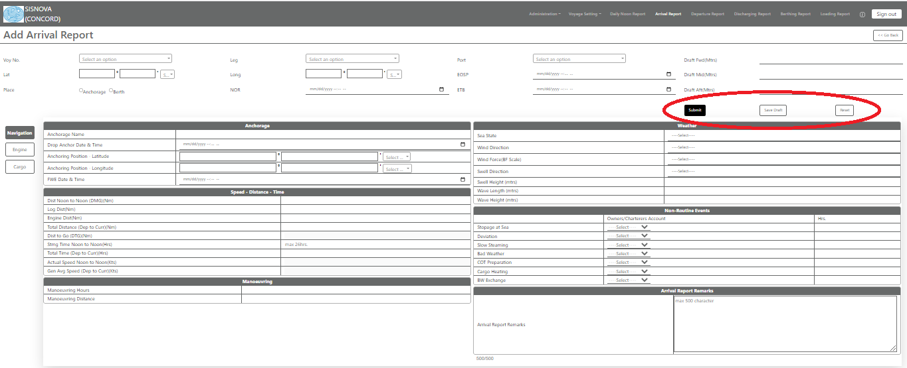
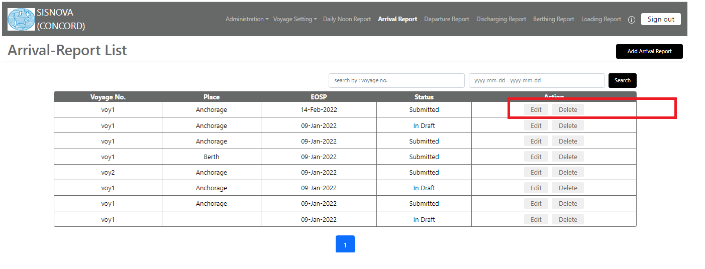

Submit/Save Draft/Reset Report

After filling desired all details, the report can be saved as draft (if still not finalized)/Submitted (if finalized)/Reset as desired.
Note: Only after submission, the report will be included in exported file to be shared with the office.

The status & action on the report can also be viewed or Edited/Deleted as desired.